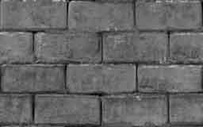
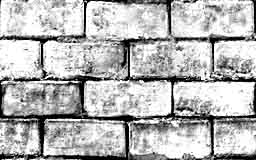
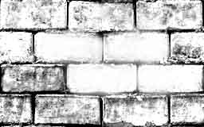
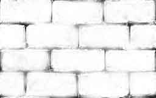
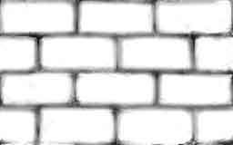

Здесь я попытаюсь кратко объяснить, что такое карты нормалей и как они создаются. Сразу предупреждаю, что компьютерный художник из меня почти никакой, поэтому я буду в основном рассказывать про техническую часть процесса.
И так, каждый пиксель в карте нормалей представляет собой закодированный трехкомпонентный вектор, определяющий нормаль поверхности в этой точке текстуры. На вид это смотрится как нечто розово-голубое, по которому можно на глаз увидеть какой-то рельеф:
В игре изображение приобретает рельефность за счет того, что в соответствии с картой нормалей и положением источника света некоторые точки осветляются, а некоторые затемняются.
Как делать карты нормалей? Сами по-себе карты нормалей вручную не рисуются - обычно они генерируются специальными утилитами на основе нарисованных художником карт высот. Карта высот - это черно-белая картинка, изображающая рельеф поверхности, где темные цвета обозначают более далекие от наблюдателя области, а белые - более близкие.
Рисование карт высот остается на совести художника - какие он при этом будет использовать средства, зависит только от его опыта. Можно начать с того, что сделать основную текстуру черно-белой, и попытаться выкрутить на ней яркость и констрастность. Дальше можно химичить инструментами осветления и затемнения, добавлять шум и "туман", использовать размытие или резкость - ну вобщем, что душе угодно. Например, вышеприведенную карту высот я практически полностью нарисовал белой и черной кисточками в фотошопе, иногда подкручивая яркость-констрастность.
Вот пример пошагового создания другой карты высот, для той кирпичной стенки из халфы. Результат, конечно, далеко не рулез, но большее мне трудно выжать из своих скиллов владения фотошопой.
Для начала я ее обесцветил:
Затем подкрутил яркость и контраст:
Дальше белой кисточкой начал выбелять кирпичики:
В итоге получилась вот такая вот фигня:
Ну и для верности, подрисовал промежутки черной кисточкой:
Хорошо, предположим карта высот у нас уже готова. Теперь нам надо ее отконвертировать в карту нормалей. Если текстура имеет нестандартные размеры (например, как 256 x 160 у вышеприведенной кирпичной стенки), то ее на этом этапе нужно пережать во что-нибудь допустимое (скажем, в 128 х 128). Учти, что уже готовые карты нормалей лучше не пережимать, так как при пережатии будет происходить интерполяция цветов, а так как цвета в карте нормалей - это закодированные вектора - то они могут чуть-чуть покосячиться. Поэтому лучше пережимать карту высот перед конвертацией ее в карту нормалей. Как ты понимаешь, разрешение карты нормалей не обязательно должно соответствовать разрешению оригинальной текстуры.
Чем отконвертировать карту высот в карут нормалей? Лично я пользуюсь плагином к фотошопу, скачать который можно здесь:
http://download.nvidia.com/developer/NVTextureSuite/Photoshop_Plugins_7.83.0629.1500.exe
Включается он через меню Filer -> Nvidia tools, и его главное окно выглядит вот так:
Самые главные настройки находятся в группе Height generation. Во-первых, это Filer type - "4 sample", "3x3", "5x5" и так далее. Чем больше значение, тем более размытой будет карта нормалей. Самая резкая - это "4 sample".
Далее стоит обратить внимание на параметр scale, который на скриншоте равен трем. Это, так сказать, "высота" картинки. Чем она больше, тем карта нормалей будет более явственной. Для относительно плоских стенок можно ставить высоту где-то два-три, Для выпуклых фигулин, типа округлых кирпичей или выпирающих камушков - пять-десять. Ну а для крупных скал возможно больше.
Для затайленных текстур полезно будет поставить галочку wrap.
Как видишь, тут есть кнопка 3d-preview - оч полезная штучка: показывает твою текстуру с летающим вокруг источником света.
Собственно, на этом я и заканчиваю этот мини-туториал :)